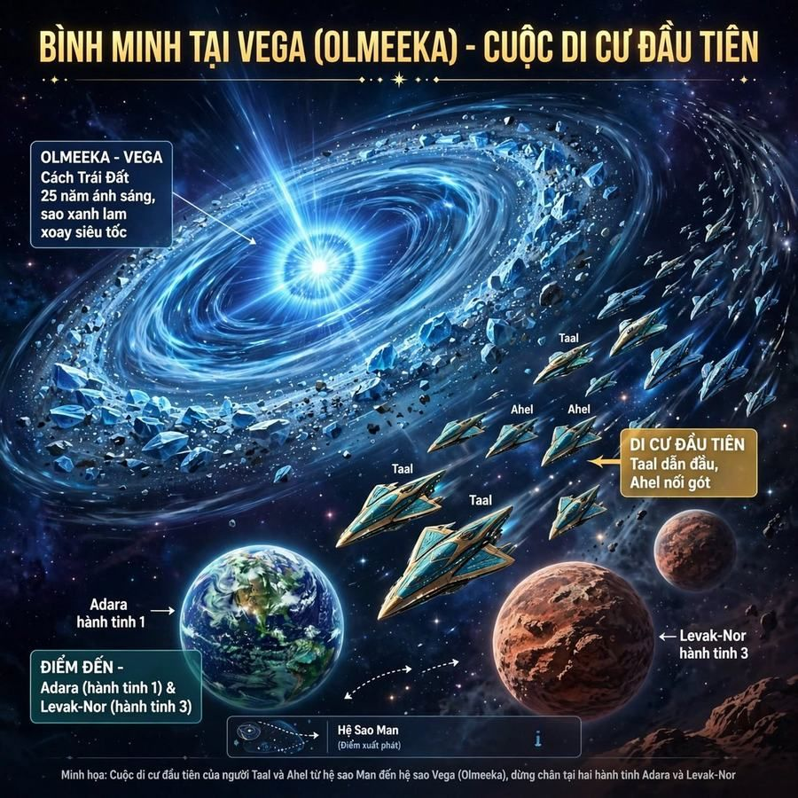
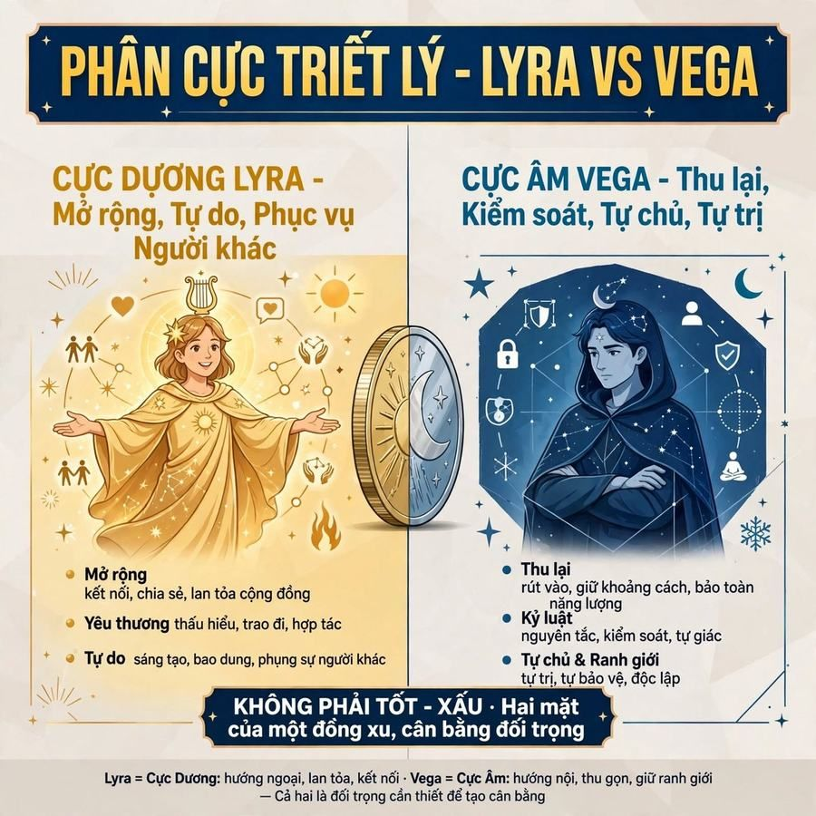
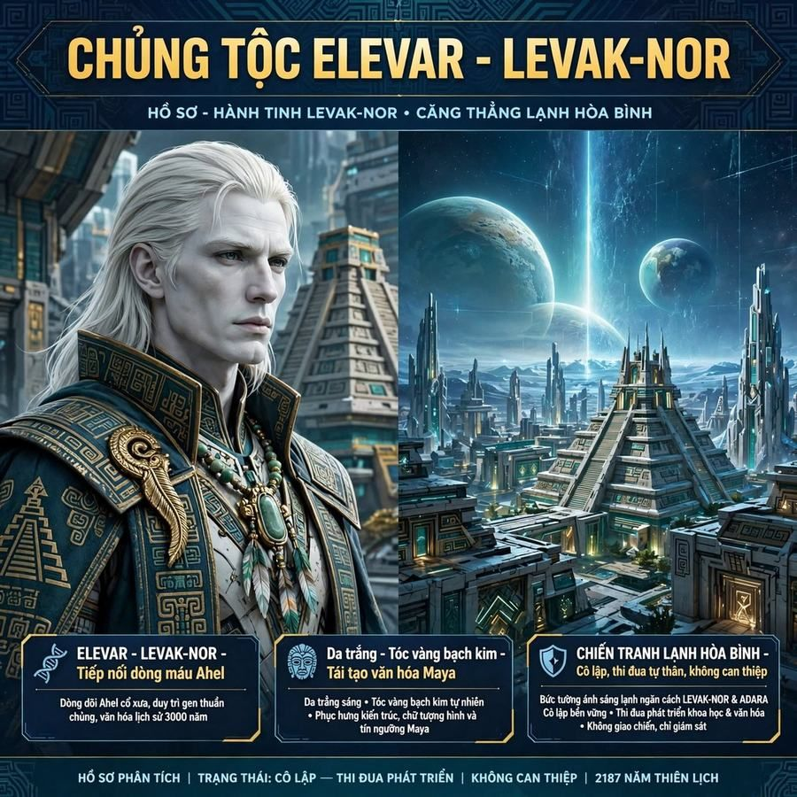
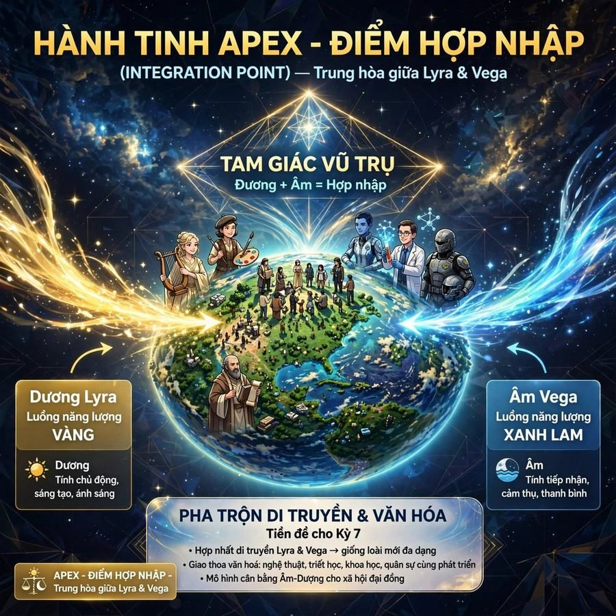
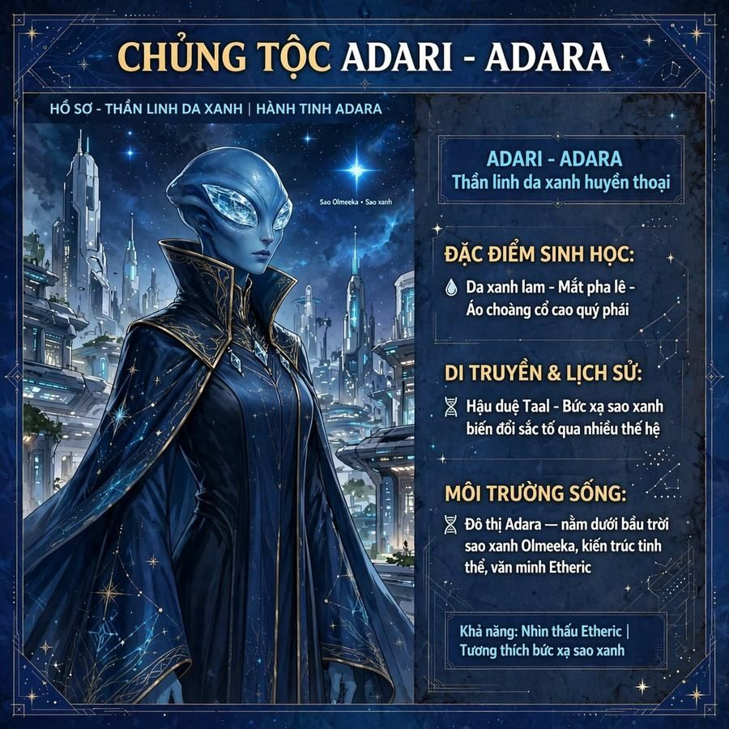
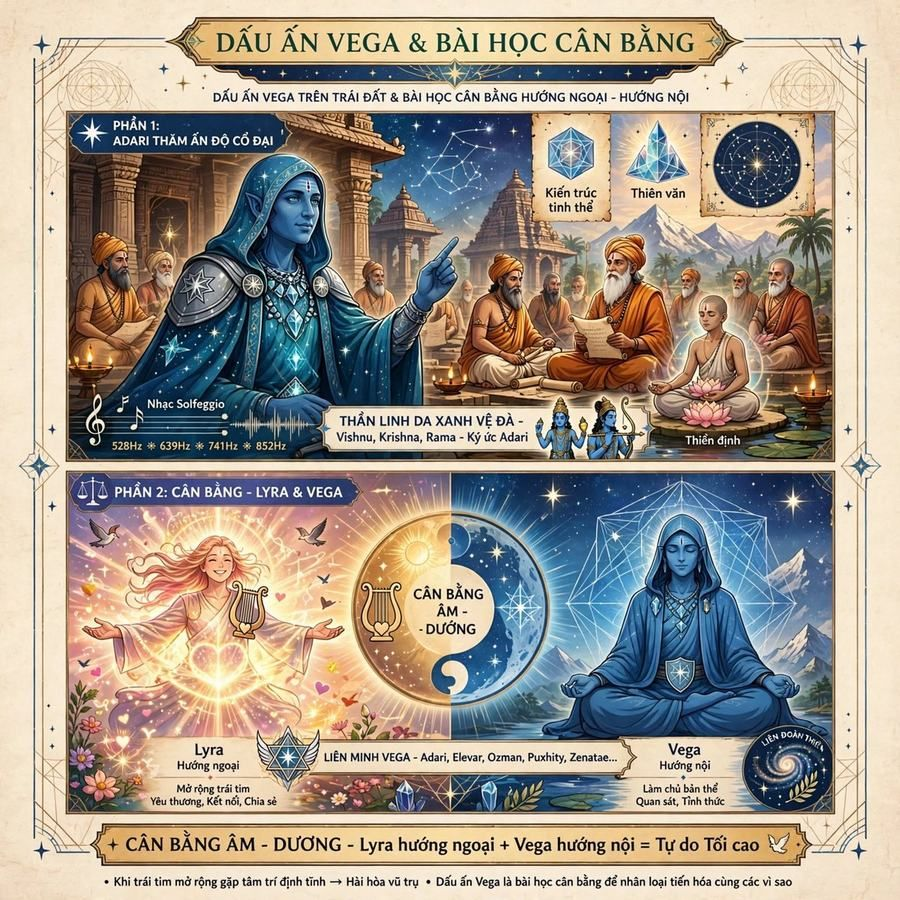

Trang chủ / Chuyên đề 1: Tiền Sử Thiên Hà / Kỳ 6
Chuyên đề 1 · Kỳ 6 / 90
NHÁNH VĂN MINH VEGA (OLMEEKA) & BIẾN CỐ PHÂN CỰC TRIẾT LÝ

Ở các kỳ trước, chúng ta đã cùng nhau chứng kiến Kỷ nguyên Vàng 40 triệu năm rực rỡ tại hệ sao Man (Kepler-62) — nơi 5 chủng tộc khởi nguyên (Ahel, Noor, Taal, Laan, Ladrakh) sống trong sự hòa hợp, sử dụng cổ ngữ tần số Taami và xây dựng mô hình nông nghiệp tinh thể siêu dồi dào.
Tuy nhiên, khi sự sống phát triển đến một quy mô nhất định, khát khao mở rộng và tìm kiếm những góc nhìn mới đã thúc đẩy các thế hệ cư dân rời nôi tổ tiên để tiến ra những vùng không gian lân cận. Điểm đến quan trọng đầu tiên trong hành trình vĩ đại đó chính là Hệ sao Vega (tên địa phương là Olmeeka) — ngôi sao xanh lam rực rỡ nằm trong chòm sao Thiên Cầm.
Sự hình thành của nhánh văn minh Vega không đơn thuần là một cuộc di cư địa lý, mà đánh dấu Cột mốc Phân cực Triết lý Đầu tiên (The First Polarity Shift) trong lịch sử Ngân Hà! Tại đây, lần đầu tiên hai trường tư tưởng đối lập — Cực Dương (Mở rộng, Tự do, Phục vụ Người khác) và Cực Âm (Thu lại, Kiểm soát, Tự trị, Tự chủ) — chính thức xuất hiện và cọ xát mãnh liệt.
Nhánh văn minh Vega được thành lập như thế nào? Những chủng tộc da xanh huyền thoại Adari và Elevar tại hệ sao Olmeeka sở hữu diện mạo ra sao? Và biến cố phân cực triết lý giữa Lyra và Vega đã đặt nền móng ra sao cho thử nghiệm hợp nhập trên hành tinh Apex cũng như cục diện thiên hà sau này?
Hãy cùng dấn thân vào Kỳ 6: Nhánh Văn Minh Vega (Olmeeka) & Biến Cố Phân Cực Triết Lý để khai quật những trang sử huyền bí nhất của bình minh Ngân Hà!
✦ ✦ ✦1. BÌNH MINH TẠI HỆ SAO VEGA (OLMEEKA) & CUỘC DI CƯ ĐẦU TIÊN TỪ NÔI LYRA
Ngôi sao Vega — mà cư dân địa phương gọi tên là Olmeeka — là một trong những hệ sao lộng lẫy và giàu năng lượng nhất trong khu vực chòm sao Thiên Cầm.
A. Vẻ Đẹp Kỳ Vĩ Của Ngôi Sao Xanh Olmeeka
- Mặt Trời Xanh Lam Xoay Siêu Tốc: Olmeeka cách Trái Đất 25 năm ánh sáng, là một ngôi sao khổng lồ màu xanh lam sáng rỡ có tốc độ tự quay quanh trục cực nhanh. Tốc độ xoay đặc biệt này tạo ra một quầng hào quang bụi sao và đĩa mảnh vụn tinh thể bao quanh ngôi sao.
- Môi Trường Năng Lượng Mới: Bức xạ từ ngôi sao xanh Olmeeka mang tần số dao động mạnh mẽ, giàu năng lượng cực quang và dải quang phổ siêu tần. Điều này đòi hỏi các sinh mệnh di cư từ hệ sao Man phải điều biến và biến đổi cấu trúc sinh học để thích nghi hoàn hảo với môi trường mới.
B. Cuộc Di Cư Của Dòng Người Taal & Ahel
- Tiến Ra Biên Giới Mới: Khi dân số tại hệ sao Man phát triển trù phú, một nhánh người thuộc chủng tộc Taal (những người nổi tiếng với tinh thần khám phá và kỹ thuật tài hoa) đã dẫn đầu các đoàn tàu di cư tiến sang hệ sao Olmeeka.
- Thành Lập Các Thuộc Địa Đầu Tiên: Họ dừng chân trên hành tinh thứ nhất của hệ Olmeeka (đặt tên là Adara) và hành tinh thứ ba (Levak-Nor). Sau đó, một nhánh người thuộc chủng tộc Ahel cũng nối gót di cư sang, tạo nên một cộng đồng cư dân đa dạng mang di sản di truyền trực tiếp từ nôi tổ tiên Lyra.

2. BIẾN CỐ PHÂN CỰC TRIẾT LÝ: CỰC DƯƠNG LYRA VS CỰC ÂM VEGA
Sự ra đời của nhánh văn minh Vega đã đánh dấu một bước ngoặt vũ trụ học quan trọng: Sự Phân Rã Cực Tính Trong Thử Nghiệm Nhị Nguyên (Polarity Experiment).
A. Cực Dương Lyra (Positive / Expansion / Service-to-Others)
- Triết Lý Mở Rộng & Tự Do: Nền văn minh nguyên thủy tại hệ sao Man (Lyra) đại diện cho Cực Dương. Triết lý của họ nhấn mạnh vào sự mở rộng tự nhiên, tính hòa hợp, tự do ý chí tuyệt đối, sự cởi mở ngoại giao và tinh thần phục vụ cộng đồng.
- Năng Lượng Hướng Ngoại: Người Lyra tin rằng con người tiến hóa thông qua việc chia sẻ, kết nối, hòa nhập với thiên nhiên và lan tỏa tình yêu thương vô điều kiện ra toàn bộ Vũ trụ.
B. Cực Âm Vega (Negative / Contraction / Self-Mastery)
- Triết Lý Thu Lại & Kiểm Soát Tự Thân: Ngược lại, khi định cư tại hệ sao Olmeeka (Vega), cư dân tại đây dần hình thành một triết lý hoàn toàn đối lập — Cực Âm. Triết lý Vega nhấn mạnh vào sự thu lại, tính độc lập, sự kỷ luật khắt khe, quyền cai trị tự thân và tư tưởng tập trung phát triển sức mạnh bản thể (Self-Mastery / Service-to-Self).
- Năng Lượng Hướng Nội & Khép Kín: Cư dân Vega tin rằng con người chỉ có thể tiến hóa nhanh nhất khi hoàn toàn chủ động kiểm soát môi trường, làm chủ thể xác, thiết lập ranh giới bảo vệ khép kín và loại bỏ mọi sự phụ thuộc vào bên ngoài.
- Không Phải "Tốt - Xấu" Mà Là "Hai Mặt Của Một Đồng Xu": Trong quan điểm vũ trụ học cao cấp, Cực Âm của Vega không phải là "sự tàn ác" hay "sự đồi bại". Đó chỉ là một góc nhìn triết lý nhấn mạnh vào sức mạnh nội tại và sự độc lập tuyệt đối, tạo nên sự cân bằng đối trọng cần thiết cho dải Cực Dương của Lyra!

3. CHỦNG TỘC DA XANH ADARI VÀ CÁC DÒNG CƯ DÂN TẠI VEGA
Sự tác động của bức xạ ngôi sao xanh Olmeeka cùng với triết lý sống hướng nội đã tạo ra những biến đổi di truyền độc đáo trên thể xác của cư dân Vega, khai sinh ra chủng tộc Adari.
A. Chủng Tộc Adari (Adara) — Những Thần Linh Da Xanh Huyền Thoại
- Làn Da Xanh Lam Rực Rỡ (Blue-Skinned Humanoids): Khi chủng tộc Taal định cư tại hành tinh Adara, sự tương tác giữa tế bào gốc với dải ánh sáng xanh của sao mẹ Olmeeka qua nhiều thế hệ đã làm biến đổi sắc tố da của họ sang màu xanh lam mịn màng.
- Đôi Mắt Tinh Thể Trong Suốt: Dù làn da chuyển sang màu xanh lam, người Adari vẫn giữ nguyên đặc trưng di truyền kiêu hãnh của dòng người Taal: Đôi mắt trong suốt như pha lê, có khả năng nhìn thấu dải sóng Etheric.
- Trang Phục Cổ Cao Quý Phái: Người Adari phát triển một phong cách trang phục rất đặc trưng: Áo choàng dài tôn nghiêm, cổ áo dựng cao và tay áo rộng thướt tha. Phong cách này sau này trở thành biểu tượng thời trang và văn hóa chuẩn mực của toàn bộ hệ sao Olmeeka.
B. Chủng Tộc Elevar (Levak-Nor) — Sự Tiếp Nối Dòng Máu Ahel
- Chi Nhánh Ahel Tại Vega: Tại hành tinh thứ ba Levak-Nor, nhóm người Ahel di cư sang đã thành lập nên chủng tộc Elevar. Họ giữ lại làn da trắng sáng và mái tóc vàng bạch kim, cố gắng tái tạo lại mô hình văn hóa cổ xưa từ hành tinh mẹ Maya.
- Căng Thẳng Lạnh Giữa Adari Và Elevar: Do sự khác biệt về phong cách sống và góc nhìn triết lý, giữa hai hành tinh Adara (người Adari) và Levak-Nor (người Elevar) từng tồn tại những giai đoạn "Chiến tranh Lạnh" hòa bình — nơi hai bên duy trì sự cô lập và thi đua phát triển sức mạnh tự thân mà không can thiệp vào công việc của nhau.

4. TỰ RỞI BỎ CHIẾN TRANH VÀ SỰ RA ĐỜI CỦA HÀNH TINH APEX
Sự cọ xát tư tưởng giữa Cực Dương Lyra và Cực Âm Vega theo thời gian đã tạo ra một lực căng từ trường mạnh mẽ trong không gian. Cả hai phe đều nhận thấy rằng sự đối lập triệt để này nếu không được dung hòa sẽ sớm dẫn đến sự rạn nứt.
A. Nhu Cầu Tìm Kiếm "Điểm Hợp Nhập" (Integration Point)
- Khái Niệm Tam Giác Vũ Trụ: Các Đấng Sáng Lập và các nhà tư tưởng thiên hà nhận ra rằng: Để trò chơi trải nghiệm không bị bế tắc, cần phải có một Điểm Hợp Nhập (Neutral Center / Integration Point) — nơi mà hai dòng năng lượng Dương (Lyra) và Âm (Vega) có thể hòa quyện và chung sống trên cùng một hành tinh.
- Sự Lựa Chọn Hành Tinh Apex: Một hành tinh nằm ở vị trí trung hòa giữa các tuyến đường giao thương của Lyra và Vega đã được lựa chọn để tiến hành thử nghiệm hợp nhập này. Hành tinh đó được đặt tên là Apex.
B. Mầm Mống Của Thử Nghiệm Hợp Nhập Trên Apex
- Sự Pha Trộn Di Truyền & Văn Hóa: Cư dân di cư đến hành tinh Apex bao gồm cả người Lyra da trắng/tóc vàng, người Vega da xanh, cùng vô số các nhánh di truyền hỗn hợp. Họ mang theo cả tinh thần tự do hướng ngoại lẫn tư duy kỷ luật hướng nội.
- Thách Thức Của Sự Đa Dạng Extreme: Hành tinh Apex nhanh chóng trở thành một thế giới sôi động nhưng cực kỳ phức tạp — nơi hội tụ của nghệ sĩ, triết gia, binh sĩ, nhà khoa học và các nhà lãnh đạo với những góc nhìn hoàn toàn trái ngược. Đây chính là tiền đề cho một biến cố thảm họa lịch sử sẽ được giải mã chi tiết ở Kỳ 7!

5. DẤU ẤN CỦA VĂN MINH VEGA TRONG LỊCH SỬ TRÁI ĐẤT
Chủng tộc da xanh Adari và nền văn minh Vega không chỉ đóng vai trò quan trọng trong lịch sử thiên hà, mà còn để lại những dấu ấn sâu sắc trong ký ức văn hóa của nhân loại Trái Đất.
A. Chủng Tộc Thần Linh Da Xanh Trong Văn Bản Vệ Đà (Vedic Texts)
- Nguồn Gốc Của Các Vị Thần Da Xanh: Trong thần thoại Ấn Độ cổ đại và các văn bản Vệ Đà, hình ảnh các vị thần có làn da màu xanh lam rực rỡ (như thần Vishnu, Krishna hay Rama) xuất hiện vô cùng tôn nghiêm. Các hồ sơ thiên hà xác nhận rằng: Đây chính là ký ức lịch sử về những đợt viếng thăm của chủng tộc Adari từ hệ sao Vega (Olmeeka) đến khu vực Ấn Độ cổ đại hàng chục ngàn năm trước!
- Trao Truyền Tri Thức & Âm Nhạc: Người Adari đã chia sẻ cho người Trái Đất cổ đại các tri thức về thiên văn, kiến trúc tinh thể, các bài hát Solfeggio và các phương pháp định tâm thiền định làm chủ năng lượng nội tại.
B. Liên Minh Vega (Vega Alliance) Sau Này
- Trụ Cột Của Sự Hòa Bình: Mặc dù khởi đầu với triết lý Cực Âm thu lại, theo thời gian và qua các bài học lịch sử, nền văn minh Vega đã tiến hóa vượt bậc. Họ thành lập Liên Minh Vega (Vega Alliance) — bao gồm các chủng tộc Adari, Elevar, Ozman, Puxhity, Zenatae, Aramani, Ginvo, Eldaru...
- Sát Cánh Cùng Liên Đoàn Thế Giới Thiên Hà: Liên Minh Vega trở thành một trong những lực lượng nòng cốt bảo vệ hòa bình, hỗ trợ các nền văn minh đang phát triển (như Trái Đất) học cách làm chủ nhận thức và chống lại sự can thiệp tiêu cực từ các thế lực xâm lược.

6. BÀI HỌC TÂM LINH: SỰ CÂN BẰNG GIỮA HƯỚNG NGOẠI VÀ HƯỚNG NỘI
Biến cố phân cực triết lý giữa Lyra và Vega để lại cho chúng ta một bài học nhận thức vô giá:
- Âm và Dương Là Hai Mặt Của Tồn Tại: Cực Dương (Lyra - hướng ngoại, yêu thương, tự do) và Cực Âm (Vega - hướng nội, kỷ luật, tự chủ) đều là những khía cạnh thiết yếu của sự tiến hóa. Người chỉ biết hướng ngoại sẽ dễ bị phân tán năng lượng; người chỉ biết hướng nội sẽ dễ bị cô lập.
- Làm Chủ Cả Hai Cực Tính Nội Tại: Trên con đường phát triển tâm linh, mỗi người con người Trái Đất cần học cách kết hợp cả hai nguồn năng lượng này: Vừa mở rộng trái tim yêu thương hòa nhập với mọi người (tinh thần Lyra), vừa duy trì sự định tĩnh, kỷ luật và làm chủ bản thể nội tại (tinh thần Vega). Đó chính là chìa khóa để đạt đến sự Tự do Tối cao!
